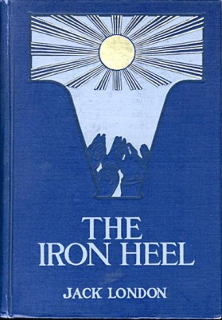
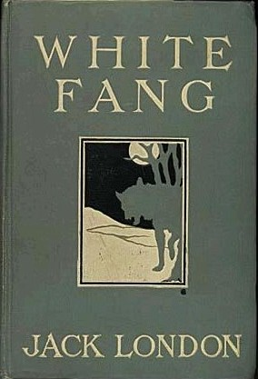
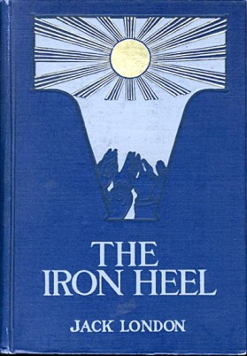
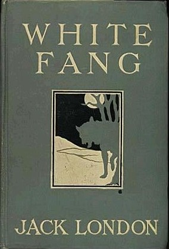

Jack London
Jack London (January 12, 1876 - November 22, 1916) was an American novelist, journalist, and social activist. He was one of the first writers to become a worldwide celebrity and earn a large fortune from writing.
London was part of the radical literary group "The Crowd" in San Francisco and a passionate advocate of unionization, socialism, and the rights of workers. He wrote several powerful works dealing with these topics, such as his dystopian novel The Iron Heel and his non-fiction expose The People of the Abyss, and The War of the Classes.
After winning first prize in a creative writing contest, London decided to pursue writing. He attended one semester at the University of California, Berkeley on borrowed money. After the first semester London dropped out due to financial struggles and later continued to pursue writing professionally.
His most well known works include The Call of the Wile and White Fang as well as the short stories To Build a Fire, An Odyssey of the North and Love of Life.
 


